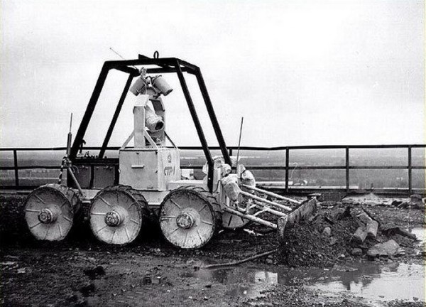
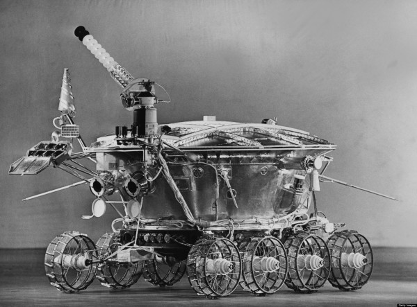
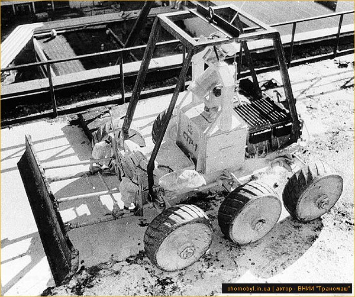
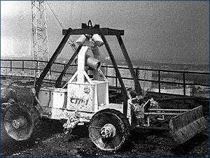

Луноход

Разработчик шасси один и тот же - "ВНИИТрансмаш" (институт бронетанковой техники).
Для тех, кто никуда не спешит: 2-часовая лекция от людей, имевших отношение к разработке и эксплуатации чернобыльских роботов. В начале 40-й минуты любопытные кадры испытаний и работы СТР-1.
Для тех, у кого нет времени, краткое содержание:
Роботов СТР-1 (специальные транспортные роботы) придумали, собрали и испытали за полтора месяца. ВНИИТрансмаш широко использовал в них обкатанные космические и военные решения.
Масса 900 кг, тяговое усилие 700 кг, шесть электрических мотор-колес, серебряно-цинковые аккумуляторы.

Время работы от аккумуляторов 6-8 часов.
СТР-1 были созданы конкретно для работы на кровле разрушенной АЭС; там они сгребали бульдозерными отвалами радиоактивные обломки и сбрасывали их в отверстие в кровле. По ходу работ для расчистки труднодоступных мест была реализована идея прикрепить к приводу отвала брандспойт, подключить его к системе водоснабжения и смывать недоступный мусор водой.
Роботов (всего их было 2 шт.) поднимали на кровлю энергоблока краном или вертолетом. Там же на крыше устанавливали телекамеры (плюс три камеры было на роботе), антенны управления и зарядное устройство. Пост управления находился в здании АЭС. Оператор по мониторам следил за ситуацией и по радио управлял машиной; задержка отклика робота на команды составляла менее секунды.
На завершающем этапе работ для экономии энергии среднюю пару мотор-колес демонтировали.

Были на кровле и другие роботы. По словам трансмашевцев, одни конкуренты (немецкие) не смогли работать при высоком уровне радиации - не выдержала электроника, а другие (отечественные) получали питание по кабелям. Кабели путались в обломках, загрязнялись, поэтому те машины показали себя не очень хорошо.
Из нюансов СТР-1:
- блок электроники был защищен 12 мм свинца;
- там, где было возможно, применяли не электронику, а релейные схемы;
- в процессе проектирования выяснилось, что старая электрическая изоляция при высокой радиации ведет себя лучше, чем современные на тот момент материалы, которые осыпались;
- стекла телекамер под воздействием жесткого альфа- и бета-излучения желтели, а через неделю темнели и приходили в негодность.
Считается, что два робота СТР-1 позволили не привлекать к опасным работам по уборке радиоактивных материалов примерно тысячу человек.